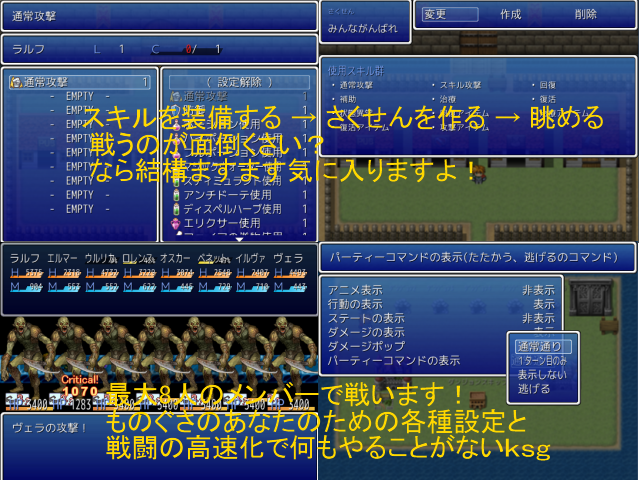

 |
|
| 作者：ああああああ | |
| ツクール：VX | |
| 作者コメント： 長い間エターナラーだった俺がツクラー経験値をためてようやく作ったゲーム そう簡単にクリアさせないぞ！難しいわけじゃないが、ただ時間をとらせる そんなエターナラーのすごい逆襲と復習！！ 最大8人の（デフォ）メンバーを自動戦闘にして眺めるだけのゲーム 俺だって2000とかでかっこ良く作りたいよ！でも無理だ！ 俺はスクリプトの力を借りるぞぉぉぉぉぉぉぉ！！！！ 本当は99人が戦闘に参加するようなゲームをつくろうと思ったがやめた！ なぜかって？何百人もアクターを作れないよぉ・・・ 次はみんな登場させるように頑張る！ ゲーム内ではちょっとだけVIPRPG要素もあるぞ！ 最後まで付き合ってくださいお願いします！ なんでもするからやってくれよぉ・・・頑張って作ったんだよぉ・・・ |
|
| 管理人コメント： 99人いたらやる方も大変なのでこれくらいがちょうどいいと思います |
|
| ダウンロード(3.37MB 08/25更新) / 感想掲示板 | |
| 前の作品 / 次の作品 / TOPへ戻る | |